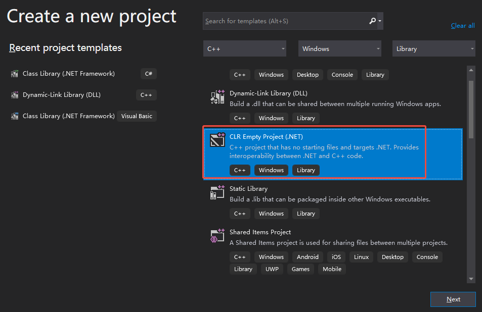
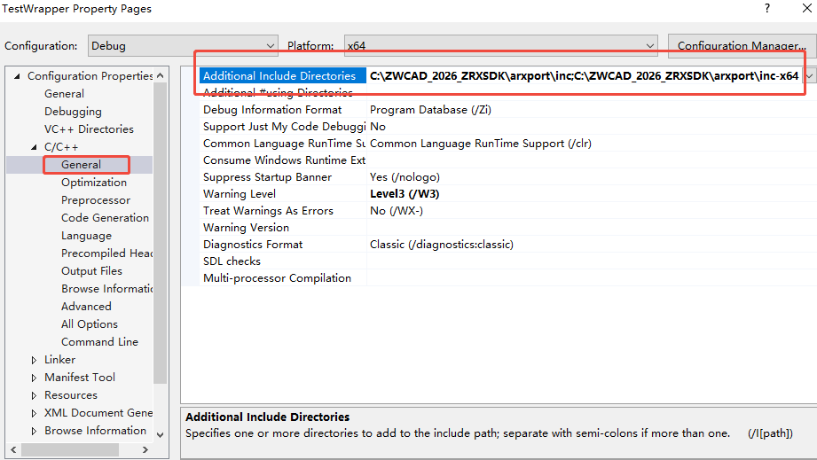
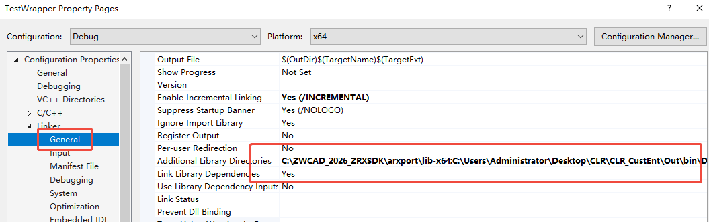
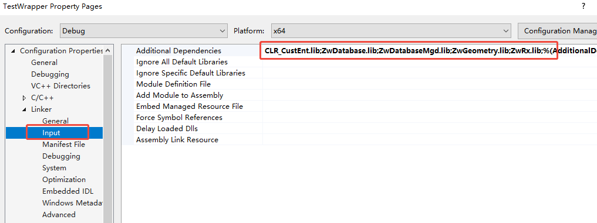
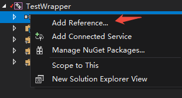
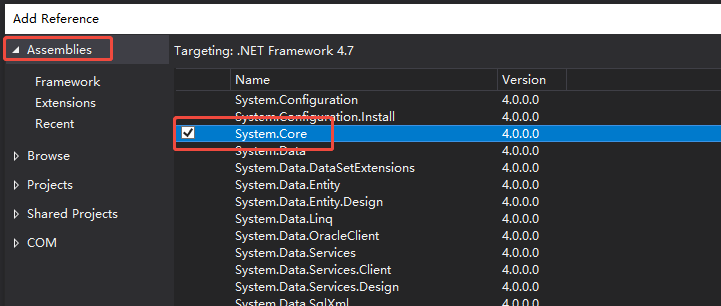
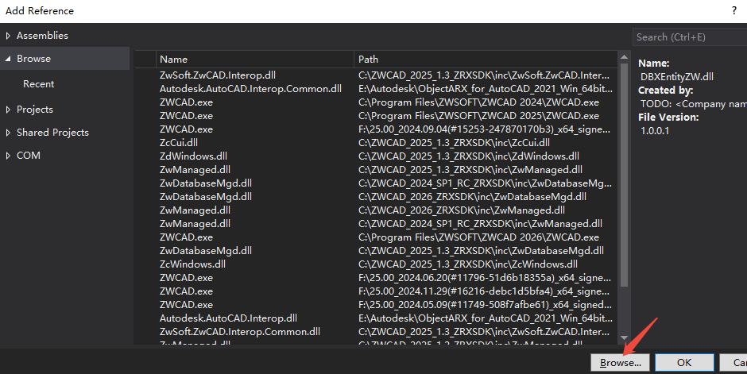

Some custom development features, such as custom entities, can currently only be implemented through ZRX interfaces. Therefore, when using .Net development, if ZRX interfaces are required, the ZRX file must be encapsulated into a .Net-callable DLL.
This section demonstrates how to call ZRX files by implementing .Net custom entity creation.
- Create Custom Entity Project
- Managed Wrapper Project for Custom Entities
- .Net Project Calling Encapsulated Interfaces
- Usage Steps
Create Custom Entity Project
For detailed steps, refer to the ZWCAD ZRX Developer Guide.
The custom entity class must be explicitly exported using markers for wrapper class invocation:
class __declspec(dllexport) CMyEntity
: public ZcDbEntity
{
public:
...
}
Managed Wrapper Project for Custom Entities
Since the custom entity project is a pure C++ project and cannot be directly called by .Net, an intermediate wrapper class must be created as a bridge between ZRX and .Net, enabling .Net to invoke methods from the ZRX file.
- Create CLR Project
- Configure Project Properties
- Add Header Files
- Add References
- Create Wrapper Class
Create CLR Project
Right-click the solution, select "Add > New Project," choose a CLR Class Library, and select the .Net Framework 4.7.

Configure Project Properties
1. Add the ZRXSDK's inc, inc-x64, and lib paths.


2. Add necessary ZRX lib files and the lib file generated by the custom entity project to the additional dependencies. If the output paths of the wrapper project and the custom entity project differ, include the lib file path.
CLR_CustEnt.lib /* Lib file generated by the custom entity project */
ZwDatabase.lib
ZwDatabaseMgd.lib
ZwGeometry.lib
ZwRx.lib

Add Header Files
Include the following headers in the project's pch.h file.
#include "rxdefs.h"
#include "dbmain.h"
#include "mgdinterop.h"
// Header file for the custom entity class
#include "../CLR_CustEnt/MyEntity.h"
Add References
Right-click the project's "References," select "Add Reference."

Add the System.Core assembly and click OK.

Add another reference by browsing to the ZwDatabaseMgd.dll file under the ZRXSDK's inc folder, then click Add.

Create Wrapper Class
Right-click the project, select "Add > Class" to create a wrapper class that exposes ZRX interfaces to .Net.
Add the following code to the generated header file:
using namespace ZwSoft::ZwCAD::Geometry;
using namespace ZwSoft::ZwCAD::DatabaseServices;
namespace TestWrapper {
// The wrapper class must inherit Entity to ensure objects are recognized as entities in .Net
public ref class MgMyEnt : public Entity
{
public:
// Default constructor
MgMyEnt();
// Copy constructor
MgMyEnt(System::IntPtr unmanagedPointer, bool autoDelete);
// Custom constructor
MgMyEnt(Point3d pt1, Point3d pt2, Point3d pt3);
};
}
Implement the constructors in the cpp file:
Note: The mgdinterop.h provides methods to convert .Net types to ZRX types.
namespace TestWrapper {
// Create custom entity by invoking the Entity constructor
MgMyEnt::MgMyEnt()
: Entity(System::IntPtr(new CMyEntity()), true){
}
MgMyEnt::MgMyEnt(System::IntPtr unmanagedPointer, bool autoDelete)
: Entity(unmanagedPointer, autoDelete) {
}
// GETPOINT3D is a ZRX-provided interface to convert .Net Point3d to ZcGePoint3d
MgMyEnt::MgMyEnt(Point3d pt1, Point3d pt2, Point3d pt3)
: Entity(System::IntPtr(new CMyEntity(GETPOINT3D(pt1), GETPOINT3D(pt2), GETPOINT3D(pt3))), true) {
}
}
At this point, a basic wrapper class has been created. The .Net project can call declared methods by referencing the compiled DLL.
.Net Project Calling Encapsulated Interfaces
- Add the DLL compiled from the wrapper project to the .Net project.
- Invoke constructors to create entities.
- Insert entities into model space.
Database db = HostApplicationServices.WorkingDatabase;
Document doc = Application.DocumentManager.GetDocument(db);
Editor ed = doc.Editor;
using (var tr = db.TransactionManager.StartTransaction())
{
var ent = new TestWrapper.MgMyEnt(new Point3d(0, 0, 0), new Point3d(100, 0, 0), new Point3d(100, 30, 0));
var btr = tr.GetObject(db.CurrentSpaceId, OpenMode.ForWrite) as BlockTableRecord;
btr.AppendEntity(ent);
tr.AddNewlyCreatedDBObject(ent, true);
tr.Commit();
}
Usage Steps
- Use the appload command to load the ZRX file defining the custom entity
- Use the netload command to load the DLL file of the managed wrapper project
- Use the netload command to load the DLL file of the .NET project
- Execute the command to create the custom entity